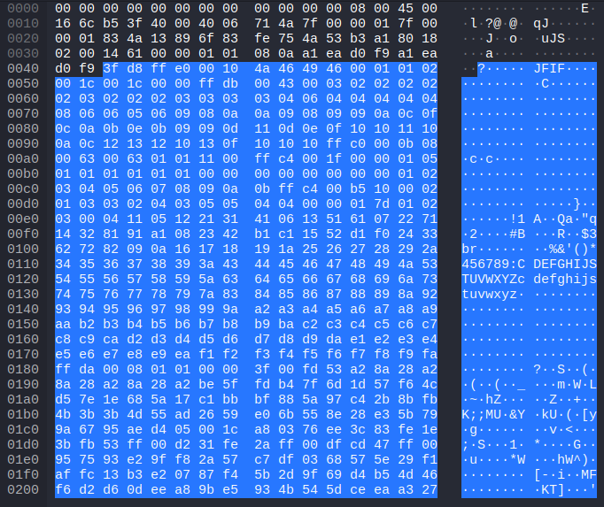
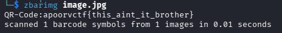
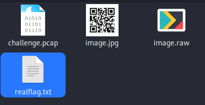
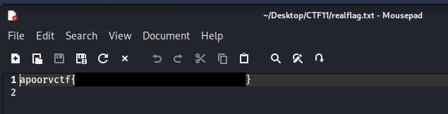

Apoorv CTF 2026 - Routine Checks (Forensics)
Challenge Overview
- CTF Event: Apoorv CTF 2026
- Challenge Name: Routine Checks
- Category: Forensics
- Difficulty Medium
- Description:
Routine system checks were performed on the city’s communication network after reports of instability.
Operators sent brief messages between nodes to confirm everything was running smoothly.
Most of the exchanges are ordinary status updates, but one message stands out as… different. - Provided Files:
challenge.pcap - Flag Format:
apoorvctf{...}
Goal
Analyze the provided PCAP capture file, identify the strange message in the traffic, and extract the hidden flag.
Initial Analysis
This being a .pcap containing packet capture and the description mentioning an unusual message, I figured that among the traffic, there would have to be something that stands out from the rest. I had no idea what exactly to look for yet though.
The file contained 1368 TCP packets, all on localhost (127.0.0.1). The used ports ranged from 5000 - 5069.
Some of those carry human-readable text payload. There are exactly 8 unique messages that repeat across some of the connections:
Server response looks strange.Did you check the logs?Let's push the update tomorrow.Testing connection again.Did you finish the assignment?System health check OK.Network latency seems stable.Backup completed successfully.
These are the ordinary status updates from the description.
Tools Used
- Wireshark
stringsfilezbarimgsteghide
Solution Path
Step 1: Inspect the File in Wireshark
To get an overview of the type of payload, I simply scrolled through the packets and checked the payload but didn’t really see anything that stood out. There were the above mentioned messages and otherwise just seemingly random noise.
As mentioned, they were also all TCP packets, always same source and destination, namely localhost and nothing else looking strange, at least at a quick glance. There were simply too many packets to closely inspect each one.

I tried out different things, like filters, string searches for anything unusual but nothing turned up.
After some trial and error, I did a rather obvious and simple thing, I checked the lengths of the streams by sorting by length and saw that one stream to port 5001 looked very suspicious. Instead of a short text message, it transmits a single large payload of 5688 bytes.

Step 2: File Payload Check
I checked the streams payload it seemed to consist of binary rather than plain text. When looking at it in Wireshark, I initially didn’t see anything special. Among other things, there was JFIF but due to having seen so many random letters in all the noise, I didn’t immediately pay attention to it. After some time I realised though that it wasn’t just random noise, it’s of course a JPEG image file format. So it seemed like among the standard traffic, an image was sent.

Step 3: Extracting the Image
In Wireshark, right-click on the TCP stream -> Follow TCP Stream. Set “Show data as” to Raw, then click Save As to export the stream to a file (in my case image.raw).
One little issue was still there though. I couldn’t just rename its exension to jpg and hope it worked because when looking at its hexdump, one can see that the header wasn’t completely correct:
3F D8 FF E0
A normal JPEG usually begins with:
FF D8 FF E0
So it had been (intentionally) corrupted but it was an easy fix. I used a hex editor and changed the first byte accordingly. After that it opened like a normal image and it turned out to be a QR code.
Step 4: Using the QR Code
This got me very excited of course, thinking I got the solution.
Scanning the code either with a phone or some other tool like zbarimg, reveals what looks like a flag, but submitting it returns incorrect. Not that surprising considering the text of the flag this_aint_it_brother:

Rather disappointing. What cost me a lot of time now, was trying to figure out whether this was the completely wrong approach and the actual solution lied entirely elsewhere or whether there was more to this.
Various Dead Ends
Thinking this current path was just a trick and would lead nowhere, I first moved away from the image and went back to Wireshark, to try and find unusual aspects in the:
- messages like patterns etc.
- TCP headers
- packet metadata
The image itself was pretty unremarkable, just containing black and white colours. I looked up online what one could do and found things like:
- invering the image
- changing contrast
- enlarging it
Nothing really fruitful came from that. So I started to think that it wasn’t something on the image but rather inside of it.
Step 5: Finding the Real Flag
So I came accross a very useful tool, specifically made to extract hidden data inside of jpeg images called steghide. With the following command I was able to extract what it was hiding:
steghide extract -sf image.jpg
It asked for a password but I didn’t enter anything and that was accepted. This created a text file simply called realflag.txt:

This time it wasn’t even some kind of trick. Opening the text revealed the actual flag:

Conclusion
This challenge involved various steps:
- PCAP analysis
- Byte-level repair
- Going past a decoy
- Steganography extraction
For my first forensics style CTF, this was quite enjoyable. As a key takeaway, don’t immediately move away from what looks like a dead end, even if it seems like it’s pointless to continue. There might be more to it than meets the eye.